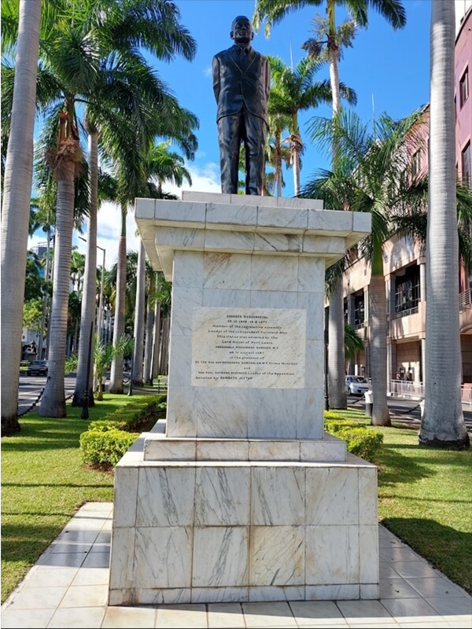
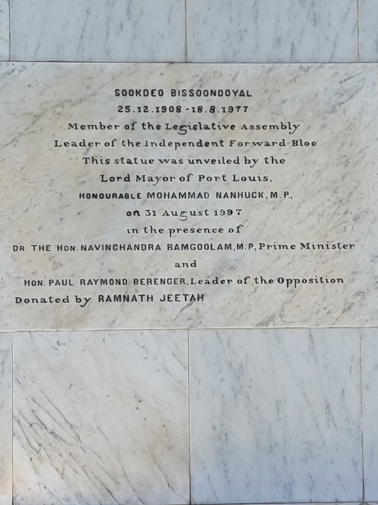

SOOKDEO BISSOONDOYAL

"Education has been something that has interested me because I have seen, when I was a child, what it could be. I was a teacher when i took risks. I engaged myself in long controversies in the press... you must know how a country fights to find its own way to survive. To have a good education is part of that struggle."-Sookdeo Bissoondoyal
The late Mr Sookdeo Bissoondoyal is known to all generations, or to put it in a different way, to the young and not-so-young, as one who has been a great parliamentarian, and a fearless debater. As it is understandable, those who belong to his generation know him better still. To them, he was a multi-facetted man : a life-long teacher, reformer, patriot, freedom fighter, forceful speaker, writer, a man of sound moral character and, above all, a deeply religious man. He was one of the leading figures in the independence movement. Sookdeo Bissoondoyal was born on the 25th December 1908 at Tyack, Rivière des Anguilles, Mauritius. He had 2 brothers, Basdeo and Soogrim. He acquired his primary education at the Young Men's Hindu Aided Primary School (Port-Louis). After passing his Teacher's Examination, he worked as a Primary School Teacher from 1923 to 1945. In 1946, Sookdeo Bissoondoyal left the teaching profession to join his elder brother Basdeo's movement Jan Andolan. He became active in the political field and on 10 August 1948, Sookdeo Bissoondoyal was elected to the Legislative Council in the constituency of Grand Port-Savanne. On 13 April 1958, he founded a political party, the Independent Forward Bloc (IFB). In 1965, he attended the Constitutional Conference in London leading to the independence of Mauritius in 1968. He joined the Independence Party which won the general election in August 1967, with Bissoondoyal re-elected in the Vieux Grand-Port & Rose-Belle Constituency No.11, and subsequently becoming Minister of Cooperatives. He resigned from the Council of Ministers on 21 March 1969, due to a disagreement on some issues with the Prime Minister, Sir Seewoosagur Ramgoolam and became Leader of Opposition in 1974. IN 1976, he stood for the general elections in Constituency No.11 but was not elected. On 18 August 1977, he died at the age of 68.
LEGACY
In honour of Sookdeo Bissoondoyal, the Port Louis municipal council renamed Place d'Armes as Sookdeo Bissoondoyal where his statue has been erected. The statue faces that of his brother Basdeo.
 The secondary state school Sookdeo Bissoondoyal State College in Rose-Belle is also named after him.


On 3 April 1987, the Sookdeo Bissoondoyal Memorial Museum, located on the main road in the village of Tyack, Rivière des Anguilles, was inaugurated